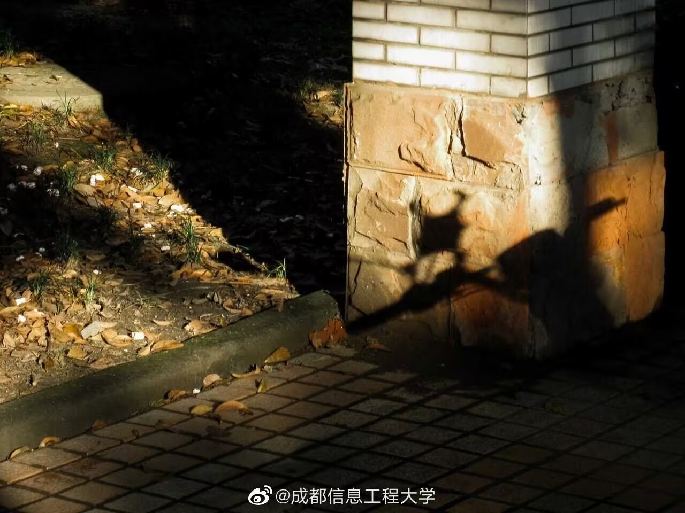
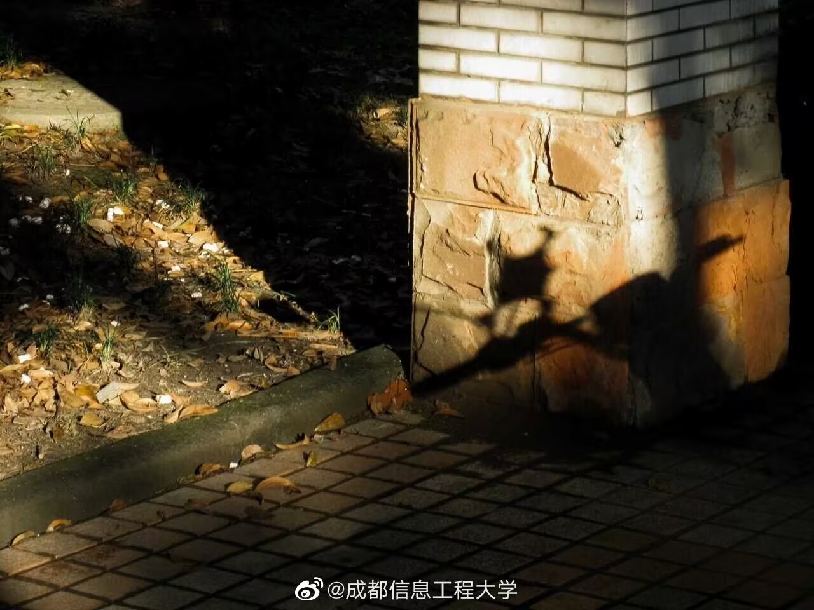

主要从事纳米材料结构与性能理论计算以及无铅压电陶瓷材料与器件研究。全面负责学院党建、学生、宣传统战及工会等方面工作。 中共党员，工学博士，教授，四川省物理学会理事，四川省共享资源课程负责人，曾先后于2007、2011年两次赴美国犹他大学进行访问学习。在《Journal of Applied Physics》、《Nano Research》和《Journal of Alloys and Compounds》等国际期刊发表SCI科研论文20余篇，参与多项国家级科研项目，主持四川省科技支撑项目2项及其他省部级科研项目。出版教材1部，获省级教学成果一等奖1项、三等奖1项。


 



党委书记：陈敏
主要从事纳米材料结构与性能理论计算以及无铅压电陶瓷材料与器件研究。全面负责学院党建、学生、宣传统战及工会等方面工作。
中共党员，工学博士，教授，四川省物理学会理事，四川省共享资源课程负责人，曾先后于2007、2011年两次赴美国犹他大学进行访问学习。在《Journal of Applied Physics》、《Nano Research》和《Journal of Alloys and Compounds》等国际期刊发表SCI科研论文20余篇，参与多项国家级科研项目，主持四川省科技支撑项目2项及其他省部级科研项目。出版教材1部，获省级教学成果一等奖1项、三等奖1项。
院长：吴锡
主要从事图形图象处理、智能计算的研究。全面主持学院人事、财务、研究生、学科建设等方面的工作。
中共党员，工学博士，教授，四川省图形图像与空间信息2011协同创新中心执行副主任，成都信息工程大学图像与视觉国际联合研究中心中方主任。四川省学术技术带头人后备人选，四川省杰出青年学术技术带头人基金获得者，四川省高校科研创新团队“图形图像处理技术”团队负责人，ACM中国计算机教育分会委员，ACM中国人工智能分会委员。 获四川省科技进步二等奖2项，主持包括国家重点研发计划、国家自然科学基金、四川省科技厅杰出青年基金、四川省科技厅国际合作交流计划在内的科研项目10余项，第一/通信作者发表SCI科研论文20余篇。
副院长：朱烨
主要从事数据库架构设计、数据挖掘的研究，负责学院的教学工作。
农工民主党员，工学博士，副教授。2013年赴瑞典梅拉达伦大学访问学习。曾获四川省科技进步三等奖、成都信息工程大学青年教师教学奖、优秀教师、“三育人”先进个人等荣誉称号，发表论文10余篇、编著规划教材4部，负责教育部产学合作项目3项。
副院长：马健兵
主要从事大数据分析、知识表示的研究。负责学院科研、外事方面的工作。
中共党员，工学博士，教授，英国伯恩茅斯大学外聘博导，四川省特聘专家、入选四川省引进海内外高层次人才、四川省学术技术带头人后备人选。主持包括英国、欧盟、四川省科技厅在内的科研项目多项，第一/通信作者发表SCI科研论文10余篇。
副院长：吴涛
主要从事智能计算、高性能与并行计算、边缘计算与网络安全等的研究，负责学院研究生相关工作。
中共党员，工学博士，副教授，四川省学术与技术带头人后备人选，四川省数值天气计算工程技术研究中心副主任，四川省高性能计算专业委员会委员。主持包括国家重点研发计划、四川省科技计划在内的科研项目10余项，第一/通信作者发表SCI科研论文10余篇。
副书记：厉威成
主要从事高校教育管理及大学生思想政治教育研究。主要负责学生、纪检监察、辅导员队伍建设、共青团等方面工作，协助分管党建和思想政治工作。
中共党员，教育学硕士，全国信息化工程师项目高级创业指导师，成都青年创业促进会第四届理事会成员，成都市青年（大学生）创新创业导师、成都市退役军人就业创业指导师，多次指导学生团队获得“互联网+”“挑战杯”“创青春”大赛的国家级、省级荣誉，先后被评省级、国家级“互联网+”大学生创新创业大赛优秀创新创业导师。主持、参与多项省级科研及教改项目，获省级教学成果一等奖1项。